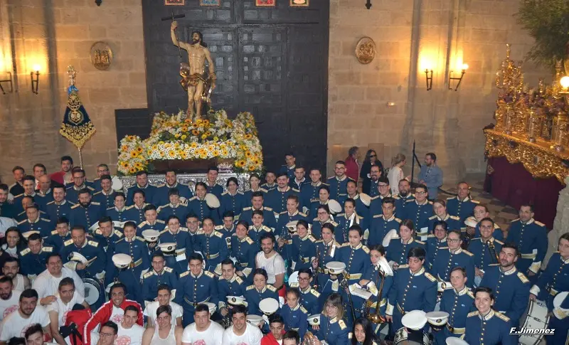

REPERTORIO
Nuestras Marchas
-
Ángel Despojado

-
El Maetro
-
El Profeta de Nazaret
-
En tu Alma, Señor
-
Angustias y Dulzura
-
INRI
-
Ora Pro Nobis
-
Orantes ad Deum
-
Padre... Escúchanos
-
Por Siempre
-
Reflejos
-
Señor de la Vida
-
Sueños
-
¡Triunfal!
-
Una Cruz de Amargura
-
Y fue Coronado...
-
Carmen
-
Y Subió a los Cielos
-
Marineros de tu Fe
-
Nazareno
Marchas Clásicas
-
Al entrar en Jerusalén
-
Al Rey de los Reyes
-
Al Señor del Rescate
-
Alma de Dios
-
Ave María
-
Caminando van por tientos
-
Cantemos al Amor de los Amores
-
Cerca de ti
-
Consuelo Gitano
-
Cruz Amor y Paz
-
De Molviedro al Cielo
-
Divino Redentor
-
Este es mi Cuerpo
-
Estrella Reina del Cielo
-
Jesús del Prendimiento
-
Judería Sevillana
-
La esperanza de María
-
La saeta
-
La Salve
-
Mi Cristo de Bronce
-
Ntro. Padre Jesús de la Victoria
-
¡Oh Bendita Estrella!
-
Orando al Cielo
-
Orando al Padre
-
Pescador de Hombres
-
Presentado a Sevilla
-
Redención, Pasión Y Amargura
-
Reina de Reyes
-
Reo de muerte
-
Resucitó
-
Rocio del Cielo
-
Sagrada Cena
-
Señor de San Román
-
Señora de Sevilla, Macarena
-
Seres de Luz
-
Triana
-
Una Oración por Sevilla
-
Virgen de la Paz
-
Virgen del Carmen
-
Y Al Tercer Día...
DISCOGRAFÍA
Se trata del primer trabajo discográfico de la Agrupación Musical Nuestra Señora del Mar, y que vio la luz en Febrero de 2012 ante un abarrotado Teatro Apolo de la ciudad de Almería. En él se incluyen un total de 10 marchas y 2 pistas narradas. Entre las marchas podemos encontrar 8 piezas propias y 2 rearmonizaciones de marchas clásicas.
Pistas incluidas
- 1 - Introducción
- 2 - Nuestra Señora del Mar. (José Manuel Alconchel Pecci)
- 3 - A los Pies del Nazareno. (Juan José Vieyte Silva)
- 4 - Triunfal. (Juan José Vieyte Silva)
- 5 - Christus Vincit. (H. Kurns)
- 6 - Un Cielo para Ti. (Manuel Latorre Balboa)
- 7 - Entre Olivos de Amargura. (Juan José Vieyte Silva)
- 8 - Cristo de las Aguas. (Juan Carlos Cañada)
- 9 - Mar de Humildad. (Juan José Vieyte Silva)
- 10 - En mis Recuerdos. (Juan José Vieyte Silva)
- 11 - Relato
- 12 - Del Mar Marinero. (Juan José Vieyte Silva)
GALERÍA

GRUPO INFANTIL
Información de la Escuela de Música Infantil Huercalense
La Agrupación Musical tiene un grupo infantil donde se pone en contacto con la música a los más pequeños.
- Horario de Ensayo:
- Viento: Sábados de 11.00h a 12.00h.
- Percusión: Sábados de 12.00h a 13.00h.
- Precio de las Clases: Consultar cuota anual
- Instrumentos Disponibles: Trompetas, Trombones y Tambores
- Requisitos: A partir de 7 años
- Director: Alejandro Sánchez Martínez
- Teléfono de Contacto: 678 113 091
- Facebook: Escuela de Música Infantil Huercalense